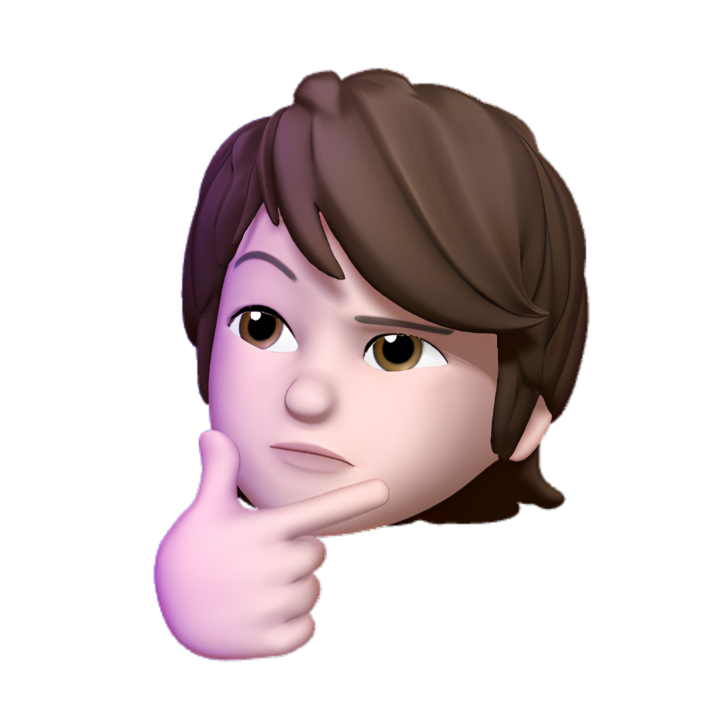

Sobre mim
Olá, meu nome é Vinícius e sou natural de Juazeiro do Norte, uma cidade no interior do Ceará, conhecida por sua forte tradição religiosa. Atualmente, tenho 18 anos e estou cursando Sistemas de Informação na UNIFAP.
Sou uma pessoa muito extrovertida e apaixonada por tecnologia e como elas podem melhorar nosso dia a dia. Acredito que a tecnologia é uma ferramenta poderosa para nos conectar com o mundo e melhorar nossas vidas. Além disso, tenho um grande interesse por artes marciais e já pratiquei jiu-jitsu por um bom tempo. Eu acredito que o treinamento me ajudou a desenvolver habilidades de disciplina, concentração e perseverança.
Fora dos estudos, gosto de me manter ativo e saudável, por isso dedico parte do meu tempo ao treinamento físico e aos exercícios. Também sou uma pessoa bastante carismática e ativa, que não mede esforços para alcançar suas metas e objetivos.
Este portfólio foi criado para compartilhar meus projetos e trabalhos recentes, e dar uma ideia do que posso oferecer como profissional. Se você tiver alguma dúvida ou quiser saber mais sobre mim, sinta-se à vontade para clicar na aba home e entrar em contato em alguma de minhas redes.
